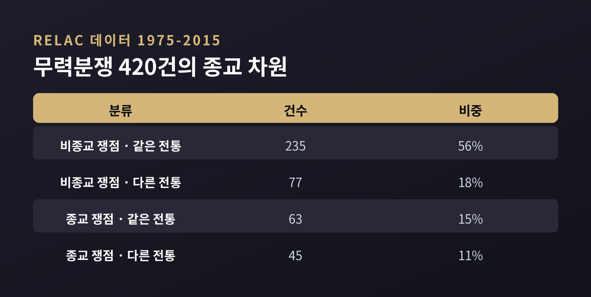
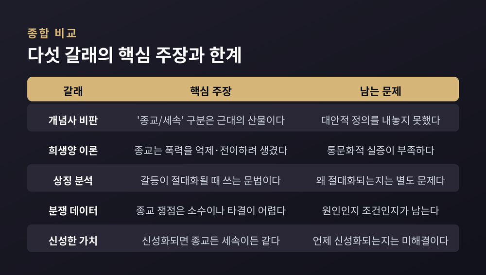

캐버노의 개념사 비판부터 지라르·유르겐스마이어·분쟁 데이터·신성한 가치 연구까지, 비교종교학이 이 통념을 다뤄 온 방식
이번 글에서는 "종교가 폭력을 낳는다"는 통념을 종교학이 어떻게 다뤄 왔는지 정리해 보겠습니다. 결론부터 말씀드리면, 학계의 주류는 이 명제를 참이라고도 거짓이라고도 판정하지 않습니다. 대신 질문에 깔린 전제부터 해부합니다.
여기서는 특정 종교를 평가하지 않습니다. 어느 신앙이 옳은지도 다루지 않습니다. 학자들이 이 문제를 어떤 도구로 들여다봤는지만 소개합니다.
가장 급진적인 문제 제기는 윌리엄 캐버노에게서 나왔습니다. 그는 2009년 옥스퍼드대 출판부에서 『종교적 폭력이라는 신화』를 펴냈습니다. 296쪽 분량의 이 책은 질문의 방향을 통째로 돌려놓습니다.
캐버노의 주장은 세 갈래입니다.
첫째, 시대와 문화를 가로지르는 '종교의 본질' 같은 것은 없습니다. 무엇이 종교적이고 무엇이 세속적인지는 그 사회의 권력 배치에 따라 달라집니다.
둘째, '종교는 비합리적이고 폭력에 취약하다'는 관념 자체가 서구 사회를 지탱해 온 정당화 신화 중 하나라는 것입니다.
셋째, 이 신화는 비서구 타자를 향한 폭력을 정당화하는 데 실제로 동원될 수 있습니다.
근거는 개념사입니다. 중세 라틴어 *religio*는 오늘날의 '종교'와 다른 말이었습니다. 아우구스티누스에게 그것은 예배를 뜻했고, 토마스 아퀴나스에게는 반복된 실천으로 길러지는 덕이었습니다. 삶에서 떼어내 사적 영역에 가둘 수 있는 무엇이 아니었다는 뜻입니다.
이 말이 지금의 뜻으로 굳은 것은 근대 초였습니다. 종교는 '명제들의 체계'가 되고, 내면적이고 사적인 본질을 가진 보편 범주로 재정의됩니다. 로크에 이르면 종교는 일차적으로 마음의 상태이고, 폭력의 관할권은 국가 쪽에 놓입니다.
캐버노가 가장 널리 인용되는 대목은 유럽 '종교전쟁' 서사에 대한 분석입니다. 그는 이 서사를 네 개의 전제로 분해합니다. 교전 당사자가 교리에 따라 갈렸다는 것, 종교가 1차 원인이었다는 것, 당시에도 종교적 원인과 정치적 원인이 나뉘어 있었다는 것, 근대 국가가 전쟁의 해법으로 등장했다는 것입니다.
그가 사료에서 찾은 것은 반대 사례였습니다. 같은 교리를 공유하면서도 서로 싸운 경우, 교리가 전혀 다른데 동맹을 맺은 경우가 빈번했습니다.
일반 역사 서술도 이 방향을 일부 뒷받침합니다. 1630년대 초 가톨릭 국가 프랑스가 개신교 측에 서서 30년전쟁에 참전하면서 전쟁의 종교적 성격은 눈에 띄게 옅어졌습니다. 리슐리외 추기경이 이끈 프랑스의 목적은 합스부르크 세력을 약화시키는 것이었습니다. 전쟁 후반은 강대국 경쟁의 성격이 짙었습니다.
캐버노의 문장은 이렇습니다. "이른바 종교전쟁은 국가 건설 엘리트들이 교회와 여타 경쟁자들에 대한 자기 권력을 공고히 하기 위해 치른 전쟁으로 나타난다."
물론 반론도 분명합니다. 서평자들이 공통으로 지적하는 것은 정의의 딜레마입니다. 종교를 좁게 정의하면 중요한 전통이 빠지고, 넓게 정의하면 민족주의와 시장 이념까지 들어와 개념이 무용해집니다. 캐버노는 이 딜레마를 드러냈지만 대안을 내놓지는 못했다는 평가를 받습니다. 그 자신도 "종교가 갈등의 원인이 된 적이 없다"고 말한 적은 없습니다.
르네 지라르는 정반대 방향에서 접근했습니다. 그는 종교가 폭력을 만든 것이 아니라, 이미 있던 폭력을 다루기 위해 종교가 생겨났다고 봤습니다.
출발점은 모방욕망입니다. 사람은 대상 자체가 좋아서 욕망하는 것이 아니라, 타인이 그것을 원하기 때문에 욕망한다는 가설입니다. 욕망은 주체와 모델과 대상이 이루는 삼각형 구조를 갖습니다.
같은 대상을 향한 욕망이 퍼지면 구성원 사이의 차이가 무너집니다. 공동체는 상호 폭력의 위기로 갑니다. 이때 작동하는 것이 희생양 메커니즘입니다. 흩어져 있던 폭력이 한 사람에게 돌연 집중되고, 조금 전까지 서로 싸우던 이들이 그 한 사람을 향해 힘을 모읍니다. 긴장은 배출되고 질서는 회복됩니다.
지라르는 이 박해가 의례적 희생이라는 제도의 기원이며, 고대 종교의 토대라고 가설을 세웠습니다. 『폭력과 성스러움』은 1972년 프랑스어로 나왔고 1977년 영어로 옮겨졌습니다.
예전엔 종교를 폭력의 발원지로 보는 독법이 흔했습니다. 지금은 지라르처럼 종교를 폭력의 관리 장치로 읽는 시각도 나란히 놓입니다.
다만 이 이론에는 경험적 검증이 부족하다는 비판이 꾸준히 따라붙습니다. 선별된 신화 해석을 넘어선 통문화적 검증이 충분하지 않다는 것, 협력적 모방이 갈등으로 가지 않는 문화 사례가 적지 않다는 것이 주된 반론입니다. 설명의 범위를 지나치게 넓혔다는 지적도 있습니다.
마크 유르겐스마이어는 세 번째 각도를 열었습니다. 그는 2001년 『신의 마음속의 테러』를 냈고, 개정 4판이 2017년에 나왔습니다.
핵심 개념은 '우주적 전쟁'입니다. 행위자들은 자기 행동을 선과 악 사이의 더 큰 영적 대결의 일부로 이해합니다. 저자의 표현을 빌리면, 폭력이 연극이라면 우주적 전쟁의 이미지는 그 대본입니다.
또 하나는 '수행적 폭력'입니다. 이런 행위는 전략적 진술이라기보다 상징적 진술에 가깝다는 분석입니다. 무엇을 얻기 위한 계산이 아니라, 무엇을 보여주기 위한 연출이라는 뜻입니다.
이 연구의 설계에서 중요한 점은 비교라는 방법입니다. 그는 한 전통을 겨냥하지 않았습니다. 서로 다른 문화와 전통의 사례를 나란히 놓고 공통의 상징 문법을 찾았습니다. 따라서 그의 질문도 "어느 종교가 폭력적인가"가 아닙니다. "갈등은 어떤 조건에서 절대화되는가"입니다.
이 분야의 지형은 그가 공동 편집한 『옥스퍼드 종교와 폭력 핸드북』에서 확인할 수 있습니다. 마고 키츠, 마이클 제리슨과 함께 엮은 이 책에는 40편의 논문이 실렸습니다. 주요 전통의 개관, 희생과 순교 같은 주제별 비교, 문학 연구부터 사회과학까지의 분석 접근이 한자리에 모여 있습니다.
이제 실증 연구로 넘어가겠습니다. 이 대목이 통념을 가장 직접 검증합니다.
웁살라대의 이사크 스벤손과 데지레 닐손은 2018년 RELAC 데이터를 발표했습니다. 1975년부터 2015년까지 40여 년의 무력분쟁을, 정부와 개별 반군 집단의 쌍 단위로 코딩한 자료입니다.
한쪽 수치는 통념에 힘을 실어 줍니다. 종교적 쟁점을 두고 싸우는 분쟁 쌍의 비중은 1975년 3%에서 2015년 55%로 올랐습니다. 절대 수도 늘었습니다. 2013년 25건에서 2015년 32건이 됐습니다.
그런데 전체 구도를 보면 그림이 달라집니다. 분석 대상 420건을 쟁점과 당사자 정체성으로 교차 분류한 결과는 이렇습니다.

과반인 56%는 종교적 쟁점도 없고 당사자들이 같은 종교 전통에 속한 경우였습니다. 흔히 떠올리는 그림, 곧 다른 종교끼리 종교 문제로 싸운 경우는 11%에 그칩니다. 오히려 종교적 쟁점 분쟁 안에서는 같은 전통 내부의 갈등이 다른 전통 사이의 갈등보다 많았습니다.
실증 연구가 "종교는 무관하다"고 말하는 것은 아닙니다. 스벤손이 2007년에 낸 별도 연구는 1989년부터 2003년까지의 모든 내전 쌍을 분석했습니다. 정부나 반군이 명시적으로 종교적 요구를 내건 경우, 그 분쟁은 협상을 통한 타결로 끝날 확률이 유의하게 낮았습니다.
조너선 폭스의 연구는 또 다른 결을 보탭니다. 1945년부터 2001년까지를 본 그의 분석에서, 1980년 이전에는 종교적 민족주의와 비종교적 민족주의가 일으킨 분쟁의 양이 거의 같았습니다. 그 이후로는 종교적 민족주의 집단이 관여한 폭력 분쟁이 상대적으로 늘었습니다.
한편 라르스에리크 세더만을 비롯한 연구자들은 전혀 다른 변수를 제시합니다. 행정 권력에서 배제된 집단, 특히 최근에 권력이 줄었거나 완전히 차단된 집단이 내전 폭력에 관여할 가능성이 훨씬 높다는 것입니다. 불평등이 심한 사회에서는 부유한 집단과 가난한 집단이 모두 평균에 가까운 집단보다 자주 싸웠습니다.
정리하면 이렇습니다. 종교는 분쟁을 일으키는 원인일 수도 있고, 분쟁을 풀기 어렵게 만드는 조건일 수도 있습니다. 두 가지는 다른 질문이고, 데이터가 주는 답도 다릅니다.
스콧 애트런의 연구는 심리학 쪽에서 같은 문제를 건드립니다. 그는 '신성한 가치'를 이렇게 정의합니다. 사람들이 가장 값비싼 희생을 치를 각오를 하게 만드는, 감정과 결합된 관념입니다.
여기서 가장 중요한 단서가 붙습니다. 신성한 가치는 종교적일 수도 있고 세속적일 수도 있습니다. 그리고 모두가 신성한 가치를 갖는 것은 아닙니다.
이런 가치를 가진 사람에게는 측정 가능한 특징이 나타납니다. 물질적 보상의 크기와 무관하게 교환을 거부합니다. 신성한 가치를 세속적 재화와 맞바꾸자는 제안은 분노를 부릅니다. 반면 다른 신성한 가치와 맞바꾸는 경우에는 반발이 덜합니다.
2007년 제러미 긴지스, 애트런 등이 미국 국립과학원회보에 실은 실험 결과는 더 분명합니다. 신성하게 여겨지는 사안에서 타협의 대가로 물질적 인센티브를 제시하자, 타협에 대한 폭력적 반대가 오히려 늘었습니다. 반대로 상대가 자기 쪽 신성한 가치에 대해 상징적 양보를 하자 그 반대가 줄었습니다.
연구진의 설명은 간단합니다. 신성한 가치는 물질적 가치와 교환되지 않습니다. 그래서 보상을 얹는 표준적 협상 기법이 역효과를 냅니다.
이 발견의 함의는 이 글의 주제와 곧바로 이어집니다. 문제는 '종교라서'가 아닙니다. 가치가 신성해지면, 그것이 종교적이든 세속적이든 타협이 어려워집니다. 신성함은 종교의 전유물이 아닙니다.
스콧 애플비는 2000년 『신성한 것의 양가성』을 펴냈습니다. 429쪽 분량으로, 치명적 분쟁 예방을 다룬 카네기 위원회 총서의 한 권입니다.
그가 던진 질문은 두 개입니다. 왜, 어떤 조건에서 어떤 종교적 행위자는 폭력의 길을 택하고 다른 행위자는 비폭력으로 정의를 추구하며 화해를 위해 일하는가. 그리고 후자를 평화구축에 끌어들이면 무엇을 얻는가.
애플비의 열쇠말은 양가성과 내적 다원성입니다. 오래되고 널리 퍼진 전통일수록 내부에 여러 학파와 실천과 교단을 품습니다. 그래서 전통은 끊임없이 내부에서 경합합니다. 무엇이 진정한 것인지, 무엇이 우선인지를 두고 논쟁이 이어집니다.
그는 이 역동의 원천을 '전투성'이라 부릅니다. 초월적이고 신성하다고 여겨지는 대의를 위해 자신과 가족과 가장 소중한 것을 내놓으려는 의지입니다. 중요한 것은 이 원천이 도덕 이전의 것이라는 판단입니다. 신성한 것과의 만남 자체는 윤리적으로 명료한 경험이 아닙니다. 거기서 순교와 자기희생이 나오고, 가난하고 병든 이를 향한 한결같은 돌봄도 나옵니다. 같은 원천에서 정반대 행동이 갈라져 나옵니다.
책의 후반부는 종교적 행위자가 평화구축에 기여한 방식을 세 가지 모드로 정리합니다. 위기 동원 모드, 포화 모드, 개입 모드입니다. 세 번째가 가장 유망하다고 보는데, 외부의 종교·문화 행위자가 당사자의 초청을 받아 들어가 중재하는 형태입니다.
한계도 솔직하게 인정합니다. 종교 평화구축자가 혼자 일하는 경우는 거의 없습니다. 종교적 현존은 복잡하고 때로 서로 어긋난 목적으로 작동합니다. 공동체 내부 분열 때문에 스스로 최악의 적이 되기도 합니다. 북아일랜드 사례를 다루면서 그는, 엘리트 차원의 하향식 협상이 풀뿌리 차원의 상향식 변화 없이는 작동할 수 없었다고 씁니다.
여기까지 본 다섯 갈래를 한자리에 놓아 보겠습니다.

개념사는 질문의 범주 자체를 문제 삼습니다. 인류학적 이론은 종교를 폭력의 원인이 아니라 관리 장치로 읽습니다. 상징 분석은 종교를 갈등을 절대화하는 프레임으로 봅니다. 실증 연구는 종교가 분쟁의 발생보다 해결의 난이도에 더 크게 작용한다는 쪽을 가리킵니다. 심리 연구는 종교가 아니라 신성화라는 과정을 지목합니다. 그리고 양가성 명제는 폭력과 평화가 같은 뿌리에서 나온다고 정리합니다.
다섯 갈래가 서로 완전히 합치하지는 않습니다. 캐버노는 '종교'라는 분석 범주를 아예 버리자고 하지만, 분쟁 데이터 연구자들은 당사자가 스스로 내건 종교적 요구를 관찰 가능한 변수로 다룹니다. 이 둘은 지금도 나란히 서 있습니다.
그럼에도 공통점은 뚜렷합니다. "종교는 폭력적이다"도 "종교는 평화적이다"도, 어느 쪽이든 하나의 변수로 설명을 끝내려 한다는 점에서 같은 오류를 범합니다. 학계가 두 답을 모두 거절하는 이유가 여기 있습니다.
덧붙일 것이 하나 더 있습니다. 통념을 검토한다는 것이 통념을 반박한다는 뜻은 아닙니다. 데이터는 종교적 쟁점 분쟁의 비중이 40년 사이 크게 올랐다고 말합니다. 종교적 요구가 걸린 분쟁이 협상으로 끝나기 어렵다고도 말합니다. 이것들은 그냥 지나칠 수 없는 관찰입니다. 검토한다는 것은 무시한다는 것이 아니라, 더 정확히 묻는다는 뜻입니다.
정리하면 이렇습니다.
종교학은 "종교가 폭력을 낳는가"라는 질문에 답하는 대신, 그 질문을 여러 개의 더 작은 질문으로 쪼개 왔습니다. 무엇을 종교라 부르는가. 종교는 갈등을 만드는가 절대화하는가 억제하는가. 신성해진 것은 왜 협상되지 않는가. 같은 전통에서 왜 정반대 행동이 나오는가.
— 단순한 답이 없다는 것이, 이 분야가 도달한 가장 단단한 결론입니다.
질문이 더 복잡해진 것 아니냐고 물으신다면, 그렇다고 답하겠습니다. 다만 복잡해진 질문이 단순한 답보다 세상을 덜 왜곡한다는 것도 함께 말씀드리고 싶습니다.